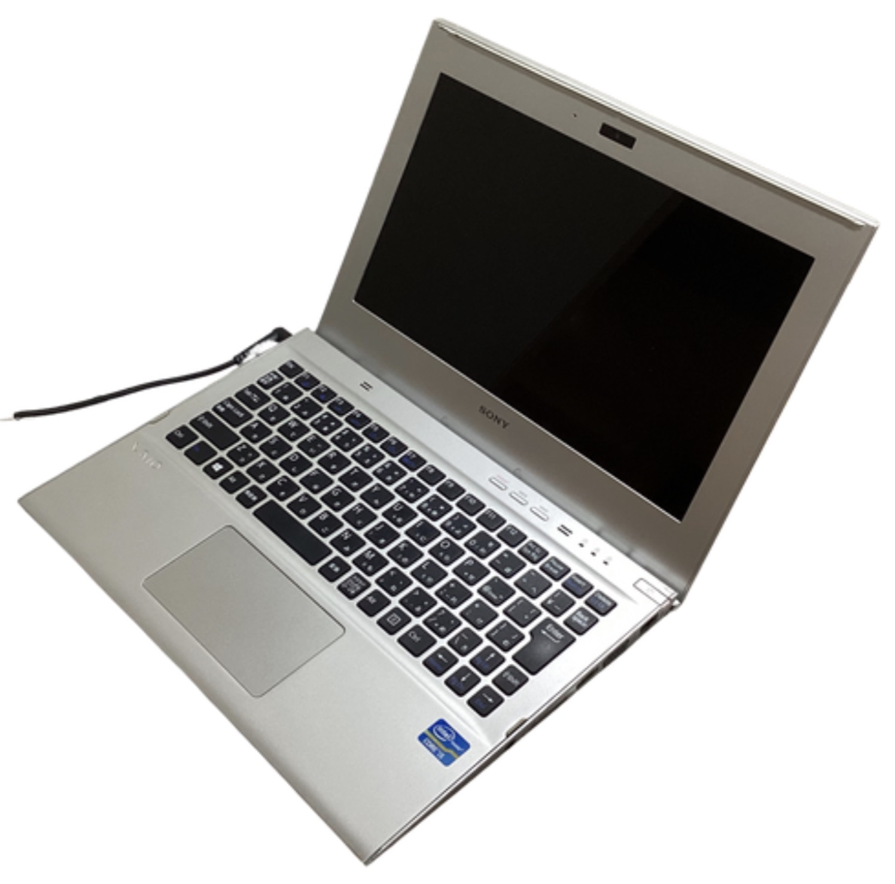

お久しぶりです。
夏休みの宿題が多すぎて更新できていませんでした。
ついに買ってしまいました。
ジャンクとは言え、初めての(まともな)パソコンです。
SONY VAIO SVT1112AJという機種で、大阪日本橋のイオシスでなんと¥3,980也。

スペック表を載せておきます。
| CPU | Intel Core i5 3317U (2C4T 1.70-2.60GHz) |
|---|---|
| RAM | DDR3 4GB (チップ実装) DDR3 4GB(スロット) |
| ストレージ | SSD 128GB mSATA III (6Gbps) |
まぁ、当時のビジネスノートのスタンダードという感じのスペックです。
なんなら画面サイズも1366×768とオンボロスペックです。
視野角がIPS液晶という感じの広さではないなと感じて調べたらTFT液晶でした。
もしかしたら視野角がちょっと狭いIPSかもしれません。
TN液晶特有の目の疲れは感じなかったのでTNではないと思います。
CPUは懐かしいものですね。

そして、今の時代から考えるとなかなかに豊富な端子です。
- USB 3.0 (Super Speed / 5Gbps)
- USB 2.0 (Full Speed / 480Mbps)
- RJ45 Ethernet (10/100Mbps)
- HDMI Type-A ※映像出力用
- D-sub 15pin ※映像出力用
- MS Duo ※フルサイズSDスロットと兼用
- 3.5mm Mini Jack ※ステレオ・音声出力用
ここまで長々と書いてきましたが、要するに画面はしょぼいけど性能も端子も十分で良きということです。
ただしWindowsでBluetoothが認識できないのだけは残念です。
追記 2025年9月9日
ドライバーを入れ直したらBluetooth復活しました。
でも入れ直し面倒だったです。
メンテナンス編も公開したのでご覧ください。
ここから遷移